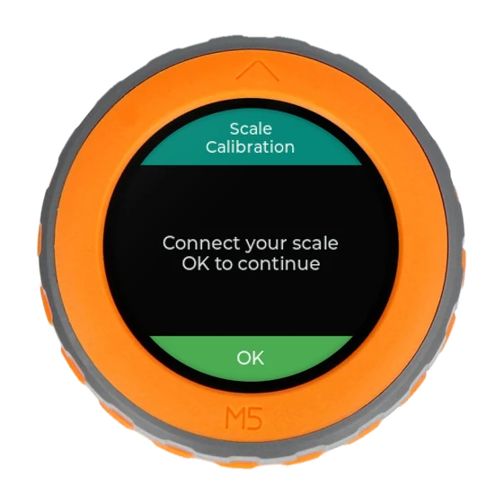
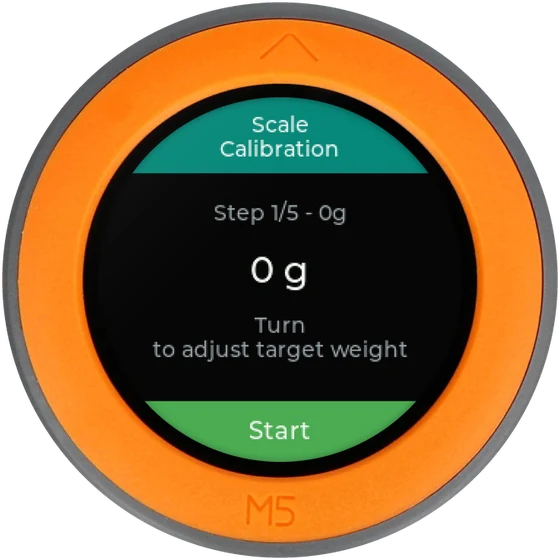
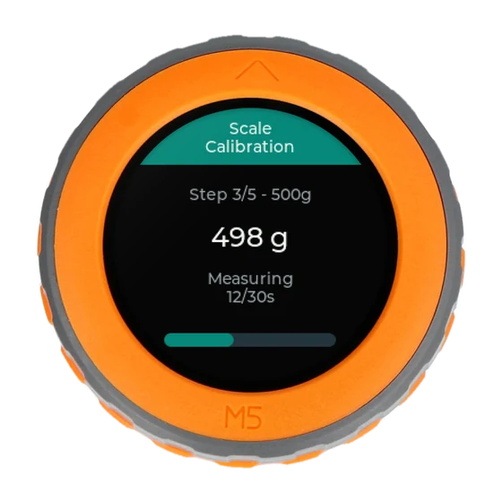
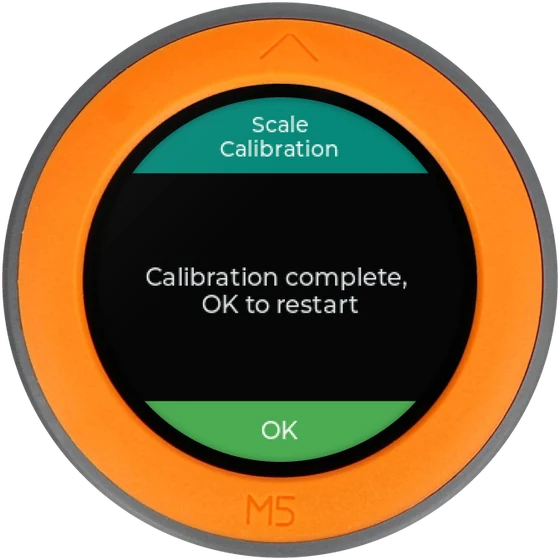

Your UHS
Assembled with the Hardware Installation Guide, and a USB-C data cable: a charge-only cable will not work.
Step 2 of 3 · Configure
Your UHS is built. Install its application from this page, connect it to your Wi-Fi and to Brewfather from your phone, then calibrate the scale: UHS guides you on screen at every step.
Installs from
Chrome or Edge on a computer
Setup Wi-Fi
UHS-Setup
Portal address
http://192.168.4.1:8080/
Five things to have at hand. The installation itself needs nothing else.
Assembled with the Hardware Installation Guide, and a USB-C data cable: a charge-only cable will not work.
The installation runs in Chrome or Edge on a computer. There is nothing to download.
To connect UHS to your Wi-Fi: you will scan a QR code shown on its screen.
Your Brewfather API user ID and API key, found in the Brewfather settings, copied on your phone.
The wizard asks for 0 g, 100 g, 500 g, 5 kg and 25 kg, or 0 oz, 4 oz, 1 lb, 10 lb and 50 lb with US or Imperial units. If yours differ, you set their real weight on screen.
Follow the steps in order. UHS restarts several times along the way: that is normal.
Unplug UHS. Hold the BOOT / G0 button on the back of the Dial, plug the USB-C cable into your computer while keeping the button pressed, then release it.

Tip: if the browser finds nothing to connect to in the next step, unplug UHS and do this step again.
Click the button below, choose the port that appears in the list, and follow the browser prompts. When asked whether to erase the device, choose to erase it for a clean first install.
Browser support: use Chrome or Edge on a computer. Installation does not work from a phone, nor from Safari or Firefox.
When the installation is finished, unplug the USB-C cable and plug it back in.
On a first installation, UHS opens its setup screen by itself.
As it does not know your Wi-Fi yet, it creates its own Wi-Fi network, UHS-Setup, and
shows a QR code on its round screen.
Join the UHS-Setup Wi-Fi with your smartphone, scan the QR code, fill in your Wi-Fi
network and your Brewfather API credentials, then tap Save and reboot.
Turn off mobile data/5G: switch it off on the phone before opening the
portal. The UHS-Setup Wi-Fi has no internet access, so most phones fall back to mobile data,
which cannot reach UHS. Turn it back on once the settings are saved.
Every portal field is explained in the User Guide. Come back here once UHS has restarted.
After this restart, UHS opens the scale calibration wizard by itself. It teaches UHS what your platform reads for five known weights, 0 g, 100 g, 500 g, 5 kg and 25 kg. It takes about five minutes and is only done once.
The first screen asks you to connect the scale. Check that the platform is plugged into UHS, set it on a flat and stable surface, leave it empty, then press the button.

The screen reads Step 1/5 - 0g. The first line is the weight the wizard asks for, the large number the weight it will record. Leave the platform empty and press the button to Start.

Steps 2 to 5 ask for 100 g, 500 g, 5 kg and 25 kg in turn. Place the requested weight in the middle of the platform. If you chose US or Imperial units in the portal, they ask for 4 oz, 1 lb, 10 lb and 50 lb instead.
If your weight is not exactly the requested value, a 498 g bag of sugar or a 4.85 kg pack of bottles, turn the dial until the large number shows its real weight. Turned slowly, the dial moves 1 g per notch; turned briskly in one direction, it moves 10 g then 100 g per notch, to cross the kilograms quickly. The value stays between 0 and 50 kg. With US or Imperial units, a notch is 0.1 oz below 1 lb and 0.01 lb above.
No calibration weights? Any object whose weight you know will do: a sealed bag of sugar, a pack of bottled water (1 L weighs 1 kg). Your weighings will only be as accurate as the weights you enter here.
Press the button: Start gives way to Measuring and a bar that fills in 30 seconds while UHS averages what the platform reads. Do not touch the platform or the table it stands on.
When the bar is full, the wizard moves on to the next weight by itself. Repeat the previous step and this one for every weight.

Stability matters: put the platform on a flat surface and do not touch it during each 30-second measurement. The more careful the calibration, the more accurate your weighings. If the platform was knocked, turn the dial a quarter turn to the left: the measurement stops and the same step comes back, with the weight you set, ready to start again.
After the last weight, UHS saves the calibration and shows Calibration complete, OK to restart. Press the button once.

UHS restarts one last time and opens the launcher, the wheel of apps. It is ready for your first brew day.
Leaving the wizard: holding the button 3 seconds, or a quarter turn to the left on its first screen, goes to the launcher. Nothing is saved before the last weight, so UHS opens the wizard again at the next start-up, from step 1.
Most installation problems come from the USB cable or from the installation mode. Setup portal problems are covered in the User Guide.
Next step: UHS is ready. The User Guide takes you through your brew day: the controls, then each app in turn, from weighing the malts to filling a keg.